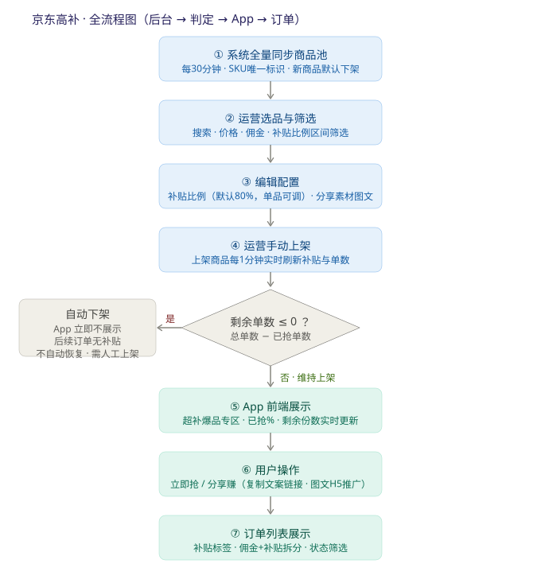
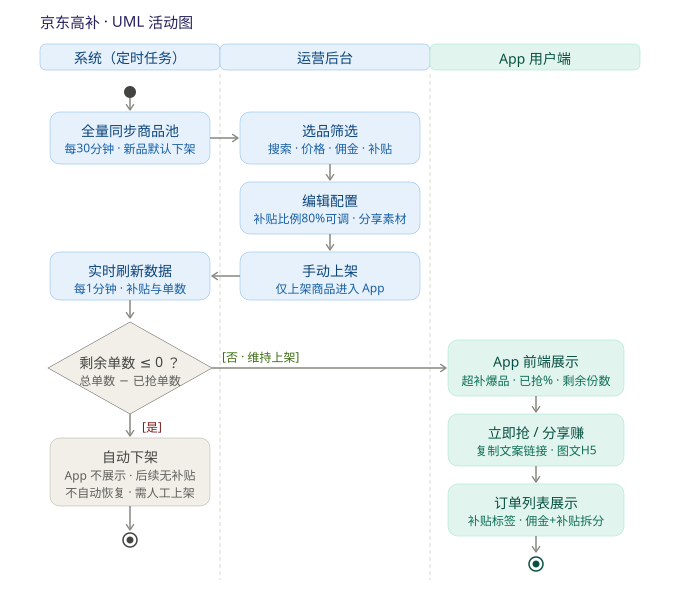
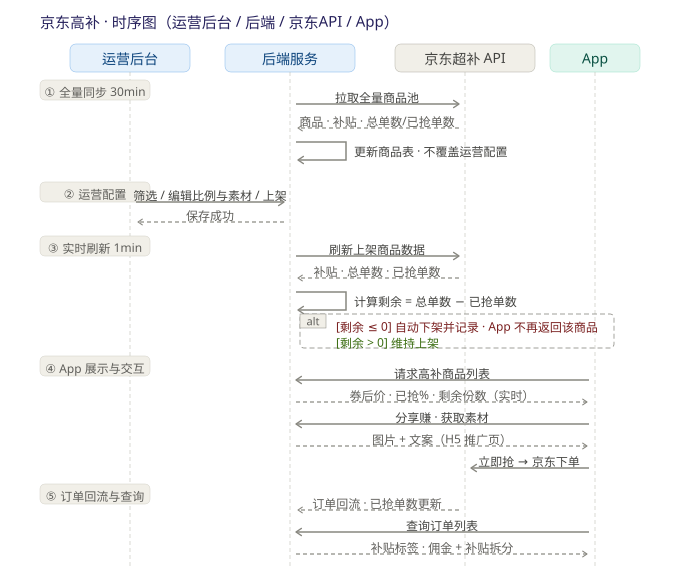
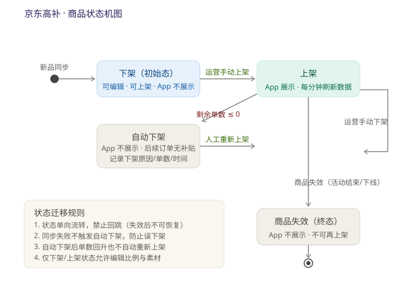

京东高补活动 · 全流程说明与字段口径
一、活动概览
| 项 | 内容 |
|---|---|
| 活动形态 | 京东超补商品池接入，App 设「超补爆品 / 高补10点档」专区 |
| 核心玩法 | 代理推广京东补贴商品，赚取佣金 + 代理补贴 |
| 关键规则 | 代理补贴 = 京东实际补贴金额 × 有效补贴比例（默认 80%，单品可调）；补贴抢完（剩余 ≤ 0）自动下架 |
| 参与角色 | 系统（定时任务）、运营（后台配置）、App 用户（代理/买家） |
二、后台配置流程（运营操作）
- 商品来源：系统每 30 分钟自动全量同步京东超补商品池，以 SKU ID 为唯一标识（已有则更新，没有则新增）；列表页「立即同步」可手动触发一次。
- 选品筛选：支持按商品名称/SKU 搜索，按价格、补贴金额、佣金比例、补贴比例做区间筛选。
- 新品默认下架：新同步进来的商品一律默认「下架」，运营手动「上架」后才在 App 展示。
- 不覆盖原则：接口同步只更新商品基础数据（名称、图片、价格、补贴金额、佣金、补贴总单数、已抢单数等），不覆盖运营已配置内容（上架状态、单品补贴比例、分享素材）。
三、补贴金额计算规则
- 代理补贴 = 京东实际补贴金额 × 补贴比例，活动默认比例 80%。
- 比例支持按单品调整（编辑商品 → 单品补贴比例）；单品设置优先，未设置时继承活动默认比例。
- 编辑页实时显示「代理预计补贴」。
代理预计补贴 = 京东实际补贴金额 × 有效补贴比例
例：¥15 × 75% = ¥11.25
例：¥15 × 75% = ¥11.25
四、分享素材配置
- 入口：编辑商品 → 分享素材；素材由「图片 + 文案」多条组成，可添加、删除、拖拽排序。
- 「预览素材」可查看 App 端最终展示效果（图片文案按排序拼接），与买手逻辑一致。
五、数据同步与自动下架规则（重点）
- 全量商品池同步：每 30 分钟一次，新增商品默认下架，不覆盖运营配置。
- 上架商品实时刷新：每 1 分钟刷新上架商品的补贴金额、总单数、已抢单数、佣金等。
- 自动下架：剩余单数 = 补贴总单数 − 已抢单数，剩余 ≤ 0 时自动下架，App 立即不展示，后续订单无补贴；剩余 > 0 维持上架。
- 边界规则：
- 接口同步失败时不执行下架（防止误下架）；
- 自动下架后即使剩余单数回升，也不自动恢复上架，需运营人工重新上架；
- 自动下架记录：下架类型、原因、当时总单数/已抢/剩余、下架时间、接口最后同步时间。
- 后台列表展示：状态（上架/下架/自动下架/商品失效）、同步状态（同步中/成功/失败）、补贴总单数、已抢单数、剩余单数、最后同步时间；「立即同步」执行中按钮置灰防重复点击。
六、App 前端展示
- 入口：京东高佣页「超补爆品 / 高补10点档」专区，含业绩数据（今日/昨天/本月/上月）、搜索、榜单 Tab（2小时热销榜/高佣榜/今日热销榜）、分类筛选。
- 商品卡片：券后价、预计收益、已抢百分比、剩余份数（随接口实时更新）。
- 按钮：每个商品有「立即抢」「分享赚」。
- 分享赚两种方式：
- 复制：一键复制文案 + 链接；
- 立即推广：跳转图文推广页（后台配置的图片+文案），分享后落地 H5「爆款好物」页，买家经此下单。
七、订单列表展示
- 订单卡片带「补贴」标签和「京东高补」来源标识，与普通订单区分。
- 预估佣金拆分为「佣金 ¥xx + 补贴 ¥xx」两行展示。
- 支持我的订单/团队订单切换，按状态筛选（全部/已付款/已收货/已结算/已退款），支持订单号/商品标题搜索。
- 下单后订单同步需要一定时间（页面有提示）。
八、全流程图

九、UML 活动图
按三个泳道展示：系统（定时任务）、运营后台、App 用户端。

十、系统时序图
四方交互（运营后台 / 后端服务 / 京东超补 API / App），分五个阶段。

十一、商品状态机

| 状态 | 进入条件 | 允许操作 | 备注 |
|---|---|---|---|
| 下架（初始态） | 新品同步默认 / 运营手动下架 | 编辑、上架 | App 不展示 |
| 上架 | 运营手动上架 | 编辑、手动下架；每分钟刷新数据 | App 展示 |
| 自动下架 | 上架态且剩余单数 ≤ 0 | 人工重新上架 | App 不展示、后续无补贴、记录留痕、不自动恢复 |
| 商品失效（终态） | 活动结束 / 商品下线 | 无 | 不可再上架，禁止回跳 |
状态迁移规则：① 状态单向流转，禁止回跳；② 同步失败不触发自动下架；③ 自动下架后单数回升不自动恢复；④ 仅下架/上架状态允许编辑比例与素材。
十二、字段口径表（数据字典）
| 字段 | 含义 | 类型/精度 | 来源 · 写入方 | 刷新频率 | 计算口径 / 规则 | 边界 |
|---|---|---|---|---|---|---|
| SKU ID | 商品唯一标识 | string | 京东接口 · 系统 | 30min 全量 | 幂等键，按 SKU upsert；不覆盖运营配置 | 必填、唯一 |
| 商品名称/图片/类目 | 展示基础信息 | string / url | 京东接口 | 30min | 同步覆盖 | — |
| 到手价（券后价） | 商品券后价格 | Decimal（分） | 京东接口 | 1min | 以服务端为准 | ≥ 0 |
| 京东实际补贴金额 | 补贴计算基数 | Decimal（分） | 京东接口 | 1min | 代理补贴的乘数基数 | ≥ 0 |
| 活动默认补贴比例 | 全局默认比例 | 百分比 | 运营配置 | 手动 | 默认 80%，人工可调 | 0 < r ≤ 100% |
| 单品补贴比例 | 单品级覆盖 | 百分比 | 运营编辑 | 手动 | 优先于活动默认；未设置继承默认 | — |
| 有效补贴比例 | 实际生效比例 | 百分比 | 服务端计算 | 1min 重算 | 单品比例 ?? 活动默认比例 | — |
| 代理预计补贴 | 给代理的补贴 | Decimal（分） | 服务端计算 | 1min 重算 | = 京东实际补贴金额 × 有效补贴比例 | 舍入统一 |
| 佣金 / 佣金比例 | 商品佣金 | Decimal（分）/ 百分比 | 京东接口 | 1min | 与补贴分列展示，不混算 | ≥ 0 |
| 补贴总单数 | 活动补贴总名额 | int | 京东接口 | 1min | ≥ 0 | — |
| 已抢单数 | 已消耗单数 | int | 京东接口同步 · 只读 | 1min 实时 | 接口同步自动更新，前端实时展示 | ≤ 总单数 |
| 剩余单数 | 可抢剩余单数 | int | 服务端计算 | 1min | = 总单数 − 已抢单数 | ≤ 0 触发自动下架 |
| 商品状态 | 上架/下架/自动下架/失效 | enum | 运营 + 系统 | 事件驱动 | 单向流转，禁止回跳 | — |
| 自动下架记录 | 下架留痕 | struct | 系统 | 事件触发 | 类型/原因/当时单数/时间/最后同步时间 | — |
| 最后同步时间 · 同步状态 | 接口同步可观测 | datetime / enum | 系统 | 每次同步 | 同步中 / 成功 / 失败 | 失败不执行下架 |
| 分享素材 | 图片 + 文案（有序） | list | 运营编辑 | 手动 | 可增删、拖拽排序；预览与 H5 一致 | — |
| 订单补贴标识 | 该订单是否享补贴 | flag | 系统 | 下单时 | 自动下架后产生的订单无补贴 | — |
十三、计算口径与金额规范
- 代理预计补贴 = 京东实际补贴金额 × 有效补贴比例（单品比例优先，否则活动默认 80%）。
- 剩余单数 = 补贴总单数 − 已抢单数；剩余 ≤ 0 自动下架，App 不再返回该商品，后续订单无补贴。
- 金额一律以「分」整数或 Decimal 存储计算，禁止浮点；舍入规则前后端统一（建议四舍五入到分，待确认）；所有金额由服务端算好下发，前端只展示。
十四、开发必须注意（资金场景底线，不可砍）
资金类需求必做三件套：幂等 + 对账 + 资损监控，任何排期压缩不得砍除。
- 幂等：同步按 SKU 幂等 upsert；自动下架、订单补贴标记重复触发不重复写入。
- 状态一致性：状态单向流转防回跳；自动下架后即使单数回升也不自动恢复。
- 对账：已抢单数 / 补贴金额以京东接口为准，订单侧补贴与后台单数可核对，差异留痕。
- 资损监控：负金额、已抢 > 总单数、重复补贴、状态回跳四类异常告警。
十五、测试重点建议
- 筛选/搜索/立即同步功能及同步中防重复点击；
- 单品比例修改后代理预计补贴计算（优先单品、否则默认 80%）；
- 剩余单数边界：1 单保持上架、0 单触发自动下架、下架后 App 不展示、不自动恢复；
- 同步失败场景不误下架；自动下架记录字段完整；
- 分享赚两种方式（复制 / 图文 H5）及 H5 落地页下单归因；
- 订单列表补贴标签、佣金+补贴拆分金额与后台数据一致。
十六、待确认项（以下为假设，需拍板）
- 舍入规则（四舍五入 / 向下取整到分）；
- 已抢单数超过总单数时是否按总单数封顶；
- 同步失败的重试次数与间隔、订单回流延迟容忍时长；
- 订单侧「佣金 + 补贴」拆分金额是否按本文档口径落库。